单像素启动、保护与版图验证
Open MicroLED Driver ASIC · 实验研究报告 · 2026-10-15
研究问题：把原理图里的参考源和保护电路真正放进版图以后，启动、PWM 与故障关断是否仍满足约定？
本轮从旧启动电荷收敛失败出发，新增参考环路稳定性试验、完整模拟宏版图、带保护恢复存储的数字宏，并对实际提取寄生重新仿真。下面按“问题 → 方法 → 数据 → 判断”的顺序阅读；每一项结论都对应独立证据文件。
| 验证层 |
本轮实际进展 |
| 数值方法 |
旧4.909%失败保留；新增近零绝对预算、局部网格与跨积分方法验证 |
| 单像素电路 |
10组启动 / 3组故障 / 4组PWM；最终套件：通过 |
| 模拟版图 |
39MOS完整宏；两套DRC、LVS、GDS回读与29/29网络RC |
| 数字版图 |
PWM+恢复存储；9角STA/SDF；200×200 µm |
| 共同顶层 |
独立DRC/LVS/PEX，详见本报告共同顶层页 |
| 制造与实测 |
尚未达到流片签核；无硅片或光学测量 |
本轮目标电流是 100 µA 单像素。所有 LED 动态数据来自合成电气模型，不能等同于实测光功率。本报告延续独立实验与教学定位。
已有总体框架见 2026-10-14 产品开发框架报告。本篇记录新实验和修改，不覆盖旧报告与失败证据。
先看完整信号链
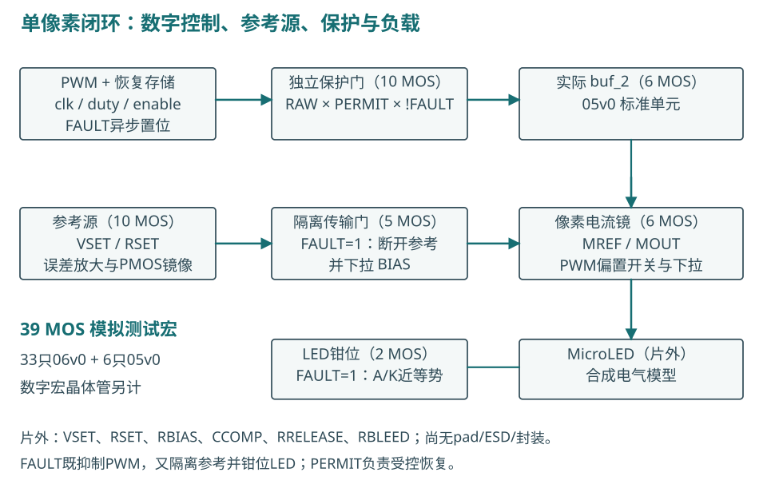
数字逻辑决定何时允许发光；参考电流源与电流镜决定导通时的电流。故障关断同时作用于 PWM、参考隔离和 LED 钳位，不能仅依靠每帧一次更新的 enable。
图中的 39 MOS 是本项目模拟测试宏的器件计数。它不是行业通用架构名称。新数字宏中的计数器、寄存器、恢复存储与缓冲器另外计算。
参考源：从电压设定到 LED 电流
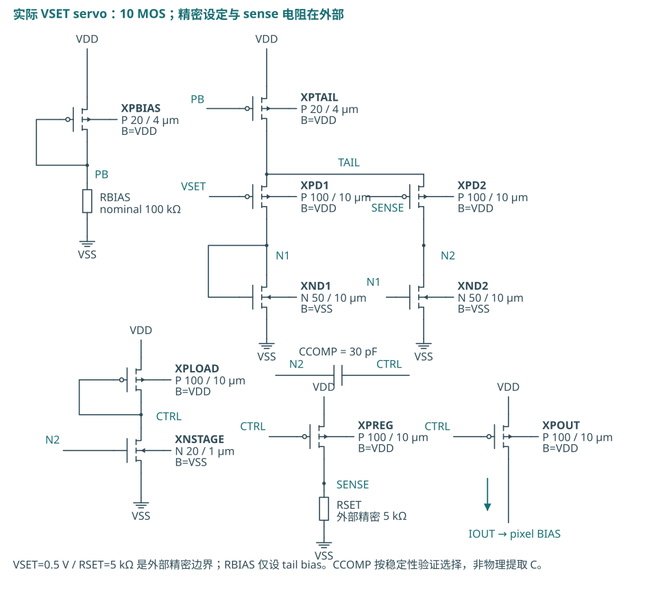
图中CCOMP已更新为30 pF，REFOUT的新增10 MΩ放电电阻在后页展开。原理图沿用十管伺服参考源；新版图的对应节点为 PB、N2、CTRL、SENSE、REFOUT。图中器件名字与新版图 XR_ 前缀一一对应，D/G/S/B 四端由网表和 LVS 核对。
计算起点： ISET≈VSET/RSET=0.5 V/5 kΩ=100 µA。误差放大器调整 CTRL，使 SENSE 靠近 VSET；PREG 建立取样电流，尺寸相同的 POUT 向 REFOUT 提供近似镜像电流。传输门放行后，MREF 把电流转换成 BIAS 电压，MOUT 再控制 LED 支路。
这不是精确恒等式。有限环路增益、镜像管漏源电压差、失配与供电余量都会产生误差。VSET、5 kΩ 精密 RSET、100 kΩ RBIAS、补偿电容和钳位释放电阻仍为外部元件，尚未包含 pad/ESD/封装模型。
环路稳定性：外部线路电容改变了答案
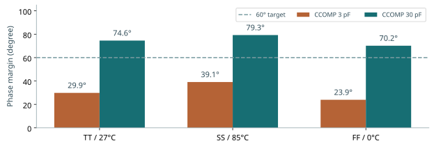
问题是：RSET 引出芯片后，SENSE 上的附加电容会增加一个动态极点。原先的 3 pF 补偿在 30 pF SENSE 负载下，相位裕量明显不足，不能只凭 DC 电流准确就通过。
| 包络 |
SENSE附加C |
原CC=3pF |
新CC=30pF |
| TT |
30 pF |
29.86° |
74.58° |
| SS |
30 pF |
39.10° |
79.26° |
| FF |
30 pF |
23.93° |
70.18° |
将外部 CCOMP 从 3 pF 改为 30 pF 后，所测三个工艺/温压包络恢复了裕量，代价是环路响应变慢。采用保持 DC 工作点的双注入法，闭环与两种注入连接的工作点一致性另有记录。这是小信号、局部环路验证，仍需启动、扰动、PWM 和故障大信号复验。
保护电路：隔离参考，避免启动馈通

FAULT=1 时，N/P 传输门同时关闭，XDIS 将 BIAS 下拉，参考环路与像素偏置断开；FAULT=0 时，两种 MOS 共同传递偏置，减轻单个 NMOS 的阈值损失。
另一路十管逻辑保护门实现 SAFE_OUT=RAW_PWM×PERMIT×!FAULT，经真实 buf_2 驱动像素 PWM 开关。PERMIT 来自异步故障置位、受控恢复的数字存储。FAULT 清除本身不恢复发光，还需 recover_request、有效时钟以及低电平 RAW_PWM。
LED 钳位在 FAULT=1 时把 LED_K 拉向 LED_A，降低 LED 两端电压。该钳位是功能电路，不能作为 ESD 保护声明。有效 VSAFE/VBUF、预先拉高的外部 FAULT，以及已定义的电源顺序仍是试验前提。
独立保护门：故障信号直接切断PWM

该10管电路先生成FAULT的反相，再用三输入NAND与输出反相器得到RAW_PWM×PERMIT×!FAULT。任意一个许可条件不满足，输出为低。图示电源名称对应新版图VSAFE，后接实际buf_2，再到像素开关。
RAW_PWM来自帧计数器；PERMIT来自可保持故障状态的恢复存储。FAULT的组合路径不等待帧边界或时钟，所以停钟时仍能切断PWM。数字延迟与LED实际电流下降时间是不同量，本报告分别测量。
LED钳位：释放电荷，但不能把正负电荷抵消
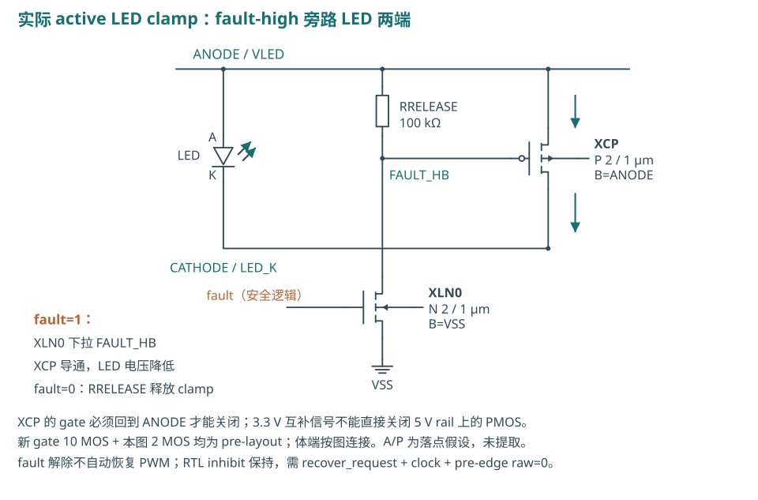
FAULT=1时，NMOS把FAULT_HB拉低，高侧PMOS导通，将LED_K拉向LED_A。LED两端电压接近零，原有结电荷通过钳位路径重新分配。FAULT=0时，RRELEASE把PMOS栅极拉回LED_A，钳位释放。
RRELEASE=100 kΩ、LED_A=5 V时，故障保持期间该电阻有约50 µA静态电流。因此“LED支路关断”不等于“整个芯片零功耗”。负向端口电流还需单独检查峰值、反向电压与电荷。
参考未上电时，浮节点需要确定的放电路径
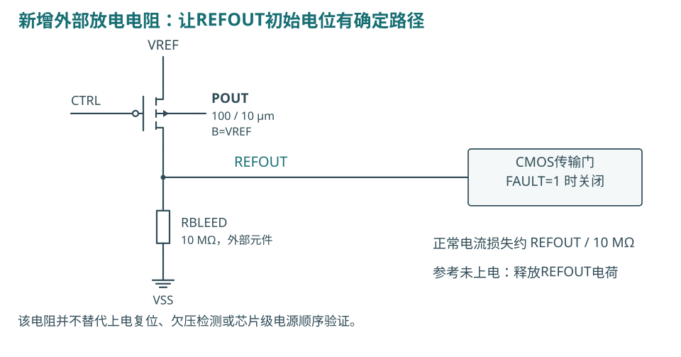
在安全电源已供电、VREF=0、FAULT=1 的初始工作点，REFOUT 由器件漏电和求解器 gmin 共同决定。原模型给出 REFOUT 比 POUT 体端高约 0.2167 V；改变 gmin 后，电位和 pA 级体电流也随之变化。这不能用来证明器件注入电流或可靠性合格。
新增 RBLEED=10 MΩ，REFOUT接至VSS。典型试验初始偏差降至约48.63 µV；DC LED电流由99.8841 µA降至99.7391 µA，差0.1450 µA。随后对这个包含电阻的候选重新做DC/PVT、环路、启动、PWM与故障试验。旧无电阻候选和首步尖峰失败均保留。
模拟测试宏仍为39只MOS。新增电阻是明确的外部试验元件，最终封装引出、板级漏电、容差及寄生尚待验证。电阻的 DC 作用已经进入网表，不能当成没有代价的理想钳位。
旧“启动不收敛”：先区分数值问题
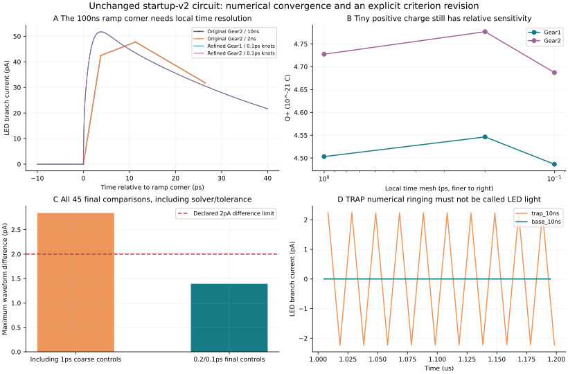
旧数据的正向电荷只有约 5×10⁻²¹ C，用它自身作相对误差分母，10 ns 与 2 ns 最大步长所得差异是 4.909%，超过旧 0.2% 标准。电流零交叉积分程序本来就是正确的；只收紧容差会导致部分求解失败，也不能保证答案更可信。
新方法保持电路、电源波形和 0–20 µs 窗口相同，在斜坡起止点附近插入共线的 PWL 节点，强制局部时间网格细化。它只改变数值取点，不改变电源斜率。再跨 Gear1/Gear2、容差及时间步长比较。
旧电路最终10组结果两两比较共45对，全部满足新增预算；最大波形差 1.3933 pA，最大电荷差 3.452e-22 C。新PEX的启动也独立进行了首步细化；不能直接沿用旧电路结论。具体对照见新PEX数值审查文件。
近零量新增绝对误差标准：ΔI≤2 pA，ΔQ≤4×10⁻¹⁷ C；电荷达到 20 fC 以上仍用 0.2% 相对标准。该边界来自 1 nA 关断预算的 0.2% 与 20 µs 窗口。旧标准失败保留；新标准通过必须单独记录。
新PEX的最初几皮秒：验证网格，而不是删掉尖峰
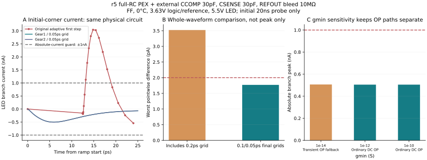
r5在加入30 pF SENSE负载和10 MΩ放电电阻后，粗首步的FF试验仍出现3.043 nA尖峰，原样判为失败。保持相同电路、电源函数和工作点，局部细化后该正尖峰不再出现，但约−0.505 nA的真实电容脉冲仍保留。
0.1/0.05 ps两个细网格、Gear1/Gear2及容差对照共5组，10对比较最大电流差1.7709 pA；20 ns诊断窗的电荷差≤8.497×10⁻²³ C。该短窗诊断证明最初角点的数值一致性；完整启动与恢复仍由40 µs回归单独验收。
更紧联合容差挑战超时，低gmin组走了transient OP fallback，均独立保留。不能把这些组混入同一个初始工作点的“全部求解器设置均通过”结论。
第一次版图错误：体端连接不能省略
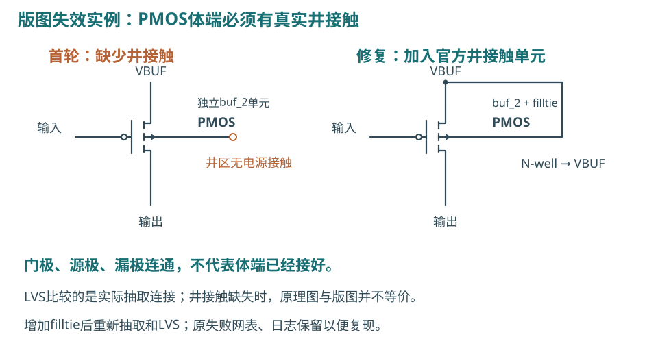
第一次独立放入官方 buf_2 标准单元时，缺少井接触，导致 PMOS 体端悬空，LVS 未通过。加入官方 filltie 单元后重新生成版图、抽取和比较，才得到唯一匹配。
LVS 核对的不只是“输入接到输出”，还包括晶体管、尺寸、网络与体端。标准单元被移出原来的标准单元行时，必须重新处理供电、井接触与衬底接触。不能因为标准单元来自 PDK 就假定其孤立放置自动正确。
该失败日志保留在原始修订目录。通过后还需独立 DRC、GDS 回读和电气验证。
第二次失败：DRC/LVS 通过，启动仍会超标
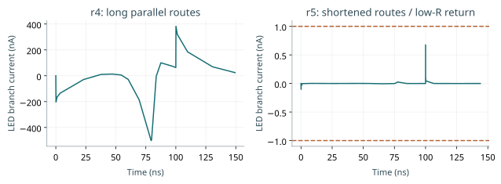
首版长并行导线布局 r4 的完整 PEX 含参考、保护、缓冲、像素及全部电源网络的 RC。100 ns 参考电源上升时，LED 总支路电流约 0.5 µA，超过 1 nA 门限；LED 模型导电分量仍只有 fA 量级。主要是结电容和互连耦合带来的位移电流。
图中r4/r5布线对照都采用CCOMP=30 pF、SENSE附加C=0、无放电电阻，隔离布局的影响。受控消融仅用于定位：去掉 REFOUT–LED_K 的 8.24068 fF 耦合后，TT 峰值由约 514 nA 降到约 110 nA；移除所有提取电容仍有约 43 nA，表明回流电阻与器件电容也有影响。这些删寄生的模型不作为最终验收证据。
修复方向是缩短网络、减少敏感节点间长平行走线、降低共享回流阻抗。单纯增大补偿电容无法消除该布局馈通。
新版图：从可读布局走向电气可用布局

放大查看参考源局部版图 · 可缩放二维版图与图层选择
r5把每条网络限制在所需端点之间，电源端口改在适当位置接入，VSS主干由0.6 µm加宽至8 µm。实际PEX中，REFOUT–LED_K耦合由8.24068 fF变为零提取项，VREF–LED_K由0.99898 fF变为零；LED_K–VSS由54.26149 fF降至15.86925 fF。零提取项表示该抽取模型中未出现该耦合，不表示物理空间绝对零电容。
实际宏边界637.03×200.36 µm，约0.12764 mm²。提取39只MOS、345个R、288个C。可在配套二维查看器中缩放和切换工艺层。
面积是实际 GDS 几何范围，不是最终产品 die area。测试宏仍未包括 pad ring、ESD、seal ring、封装焊盘与测试结构；目前布局也没有进行阵列面积优化。层图表达真实二维多边形，不能冒充三维电磁或工艺仿真。
提取后验证：以电路行为验收版图
| 包络 |
启动最大绝对电流 / nA |
故障关闭 / ns |
duty=1电荷误差 |
| TT |
0.6277 |
205.71 |
-0.0623% |
| SS |
0.5997 |
303.39 |
-0.4813% |
| FF |
0.6563 |
156.85 |
+0.0268% |
最终片外元件与输入条件：VSET=0.5 V，RSET=5 kΩ，RBIAS/RRELEASE=100 kΩ，CCOMP=30 pF，SENSE附加电容预算30 pF，RBLEED=10 MΩ。完整套件：通过。270点DC导通电流97.2547–100.6162 µA，关断最大52.51 pA。MOS角/温压扫描不含统计失配、电阻容差或RC工艺角。
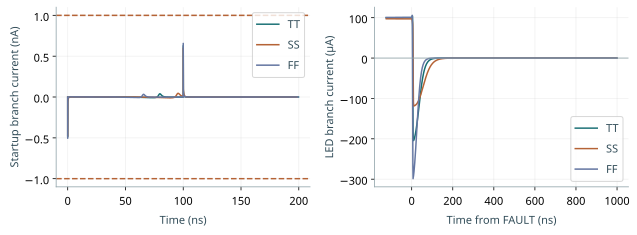
验证条件：TT/27°C/3.3 V/LED 5 V；SS/85°C/2.97 V/LED 4.5 V；FF/0°C/3.63 V/LED 5.5 V。参考上电斜坡覆盖 100 ns、1 µs、10 µs，并检查 VSET 延迟到达。故障源在启动期间保持有效，LED 和安全电源预先有效。
此表与数字 STA 的温度/电压角不同：每项证据应按自己的测试条件阅读。外部 SENSE 电容、补偿值和寄生版本在证据中明确记录。
PWM 与故障：平均电流、尖峰和尾电荷分开看
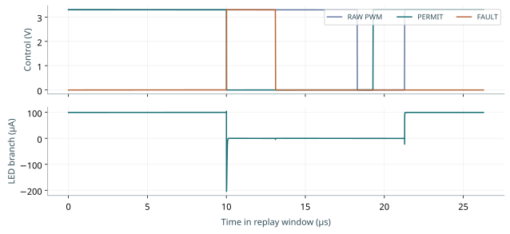
PWM 使用 1 MHz 时钟，每帧 256 个时隙，帧周期 256 µs。duty=1 的理想导通宽度为 1 µs，理想平均电流约 100 µA/256=0.390625 µA。实际验收积分整个帧中的 LED 支路电荷，并与同环境 DC 导通电流比较。
故障后用“持续低于 1 nA 的时刻”评估关闭时间，而不是第一次穿过阈值。正向尾电荷 Q+ 与负向钳位电荷 Q− 分开积分，不能互相抵消。门限为：1 µs 内关断、首个 1 µs 的 Q+≤10 pC、|Q−|≤20 pC。
将真实数字SDF时间戳输入完整r5模拟PEX（引脚斜率仍假设10 ns），典型duty=1误差 -0.1014%，停钟故障关闭 205.79 ns，Q+ 0.5046 pC，Q− -7.3634 pC。这是明确边界的联合回放，尚非共同顶层全部晶体管的动态仿真。
数字宏：恢复存储也进入物理实现
新顶层 pixel_control_v3 组合原 PWM RTL 和 pixel_safety 恢复控制，并保留 RAW_PWM、PERMIT、protected_monitor 三个输出。前两个进入模拟保护门；第三个只用于观测，未用它代替模拟保护路径。
| 检查 |
实际结果 |
| RTL / 布线后功能网表 |
各10个用例通过 |
| 九角SDF |
每角4108项检查；故障观测输出关闭0.767–2.429 ns |
| 寄存器setup最小余量 |
986.059 ns |
| 寄存器hold最小余量 |
0.441845 ns |
| slew/cap/fanout |
9角0违规；SDC条件有效 |
| DRC / LVS / GDS XOR |
数字宏对应结果均0错误 |
时序仿真使用实际布线后的 SDF。Icarus 不支持的部分 XOR 条件路径与时序检查已列入限制；静态 STA 另行检查寄存器路径、recovery/removal 和最小脉宽。不能把仿真通过解释成“任何异步输入都不会亚稳”。
本轮 SDC 把外部输入到达时间设为 200 ns，时钟周期 1000 ns，输出负载假设72.91 fF；共同顶层跨宏连线尚未回灌这组STA。FAULT 的任意相位释放、输入同步和板级时序约束仍需完善。没有自主上电复位或欠压检测器，外部 FAULT 启动有效是必要前提。
DRC、LVS、PEX：共同顶层与覆盖边界
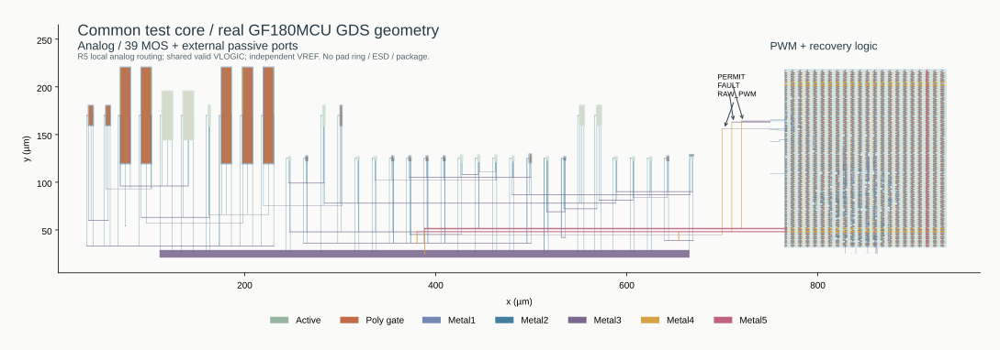
新参考/保护/像素宏与新数字宏已经接成真实共同顶层。RAW_PWM、PERMIT、FAULT及电源回流有实际金属连接；VREF独立供电。实际多边形包围盒跨度916×204 µm，约0.186864 mm²，尚无pad ring。
| 检查 |
结果 |
| Magic / 独立KLayout DRC |
均0错误；首轮Via2 cut 0.28 µm不合规，修成0.26 µm后重检 |
| 顶层LVS |
唯一匹配；真实断线及电源短路负控均被拒绝 |
| PEX提取覆盖 |
7277 MOS（含数字及官方fillcap）、36588 R、30230 C；Magic电阻网络展开6512/6512 |
| PEX拓扑审计 |
仅在审计副本中短接R/忽略C后，与独立设计网表LVS唯一匹配；实际RC文件保留全部寄生；该审计不验证R/C数值精度 |
初次提取只展开242/6512网络。后续在提取副本加入Magic支持的res:drive节点属性，坐标来自原始节点记录，才完整展开；未改变GDS或原始几何。补充审计验证只有这些属性被增加。全共同顶层的7277管瞬态尚未完成回归；宏PEX+SDF回放结果不能自动覆盖它。
官方LVS setup不比较AD/AS/PD/PS属性；PEX使用抽取结几何。网络覆盖不等同于三维场求解精度、RC工艺角或EM签核。
DRC 检查线宽、间距等几何规则；LVS 检查抽取电路与设计网表是否匹配；PEX 生成含寄生电阻、电容的电路。它们回答不同问题，不能互相替代。
工具与 PDK 都锁定在项目记录中：GF180MCU D 公共工艺、模拟 06v0 与标准单元 05v0 器件；Magic 8.3.684、Netgen 1.5.324、独立 Linux KLayout 0.30.7，数字实现采用固定 LibreLane 容器。完整电源网络包含在模拟宏提取中。
本轮的规则检查不代表晶圆厂签核。未完成制造方认可的完整 signoff deck、密度/填充/天线全覆盖、EM/IR、ESD/latch-up、封装/板级、可靠性与实物测量。
下一步决策与复现入口
当前可继续在单像素完整物理模型上研究，但仍有两项直接影响产品规格：① 参考电源3.3→2.97→3.3 V、100 ns边沿的TT扰动使电流瞬时达到60.16–147.24 µA，回到±0.5%需约2.49 µs；必须制定电源扰动和瞬态过冲预算。② FAULT任意相位释放、所有电源同时启动/掉电、POR/欠压和封装寄生尚未闭合。
共同顶层已生成的全部RC网络仍需系统级动态回归；目前电气结论针对模拟宏完整PEX及数字SDF边界回放。外部参考、精密电阻、补偿与放电元件也是平台的一部分。
后续顺序应保持：先完成单像素上电/电源顺序、pad/ESD 与板级寄生，再开展失配、温漂和真实 LED 模型标定；之后才扩展阵列及电流范围。0.1–7 mA、光通信高速调制和车规可靠性均不由本轮 100 µA 验证建立。
复现脚本：scripts/startup_v3/、scripts/analog_v3/、scripts/layout_v3/、scripts/control_v3/。完整原始波形、求解失败、网表和工具日志位于 build/；可追溯摘要与源文件哈希位于 evidence/。本报告的数值来自这些文件，未把文档检查数当成电路通过数。
公开基础资料：GF180MCU PDK、open_pdks、Magic、Netgen、ngspice 手册入口、LibreLane、OpenSTA。具体模型和规则版本以本仓库 lock 文件与运行 manifest 为准。
研究负责人需要决定的是可验证的下一步，而不是仅看“已生成 GDS”。进入流片前还要确定制造渠道接受的 PDK/规则、顶层接口与封装、测试方法和交付清单，并完成对应签核。